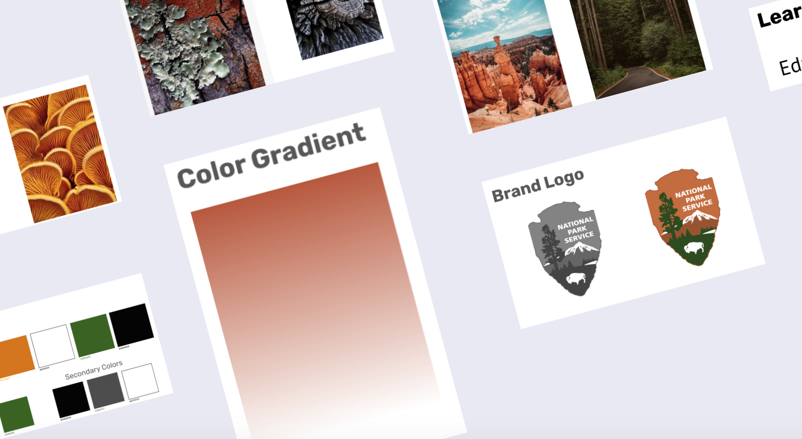
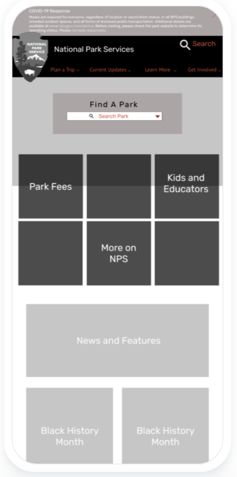
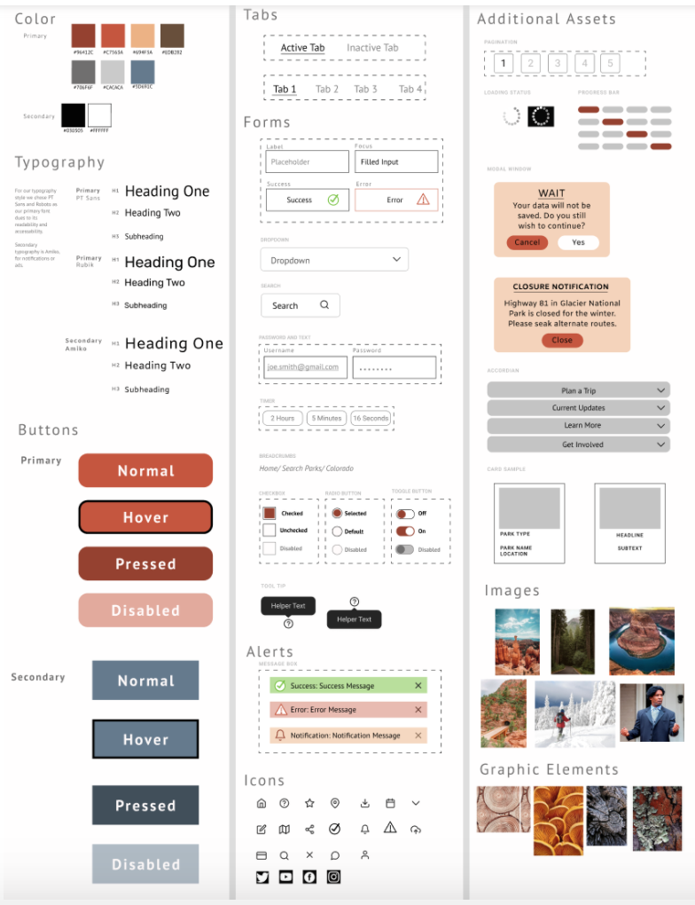

Research and Definition
To begin this process, we wanted to gather all the information we could, so we could take the best next steps to using RWD to rebuild this site. We did this by gathering user research, and then building the proto/user persona to better understand the target market. We also conducted a heuristic evalutation to better understand the current site, and see what worked and what caused the user to trip.Site Map
The current site is pretty spread out, the information tends to be sporadic and unorganized. I wanted to evaluate the current site in order to examine necessary steps, and analyze the user flow.I started by creating a card sorting activity, using the define, group and structure technique to explore the current page. This provided a little insight into what essentials we needed to focus on, and what could perhaps be pushed a little lower on the "to-do" list.

Design and Developement
The design and development process helped me organize the user research as well as plan the next steps for the final clickable prototype. By creating a moodboard, wireframe and style guide I could get a better idea of how to apply color and layout to my design and rebrand.-

Moodboard
Through the process of setting up a moodboard, I could evaluate the theme of the pages and site, and determine which colors, fonts and patterns looked most appropriate for the redesign on the national park page. -

Wireframe
At the beginning of my design process, I created wireframe prototypes for mobile and web, in order to test the layout in a low fidelity setting. -

Style Guide
After brainstorming on the moodboard and the wireframe, I started adding aspects to the style guide. As we tested and iterated the wireframe, I began to apply these styles to our wireframe for higher fidelity prototypes.